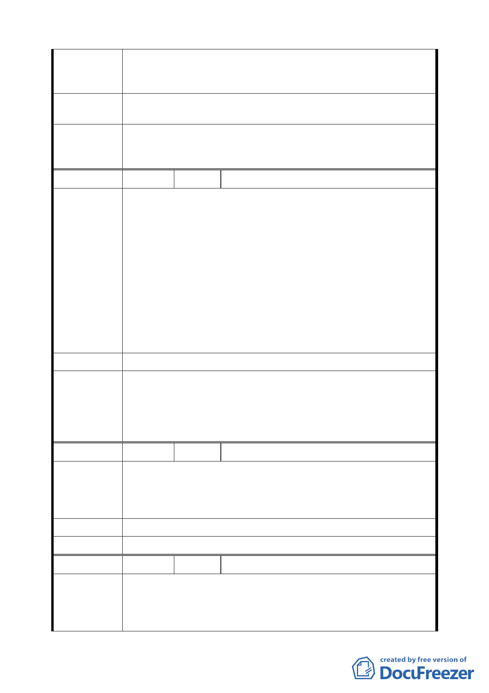

市民大道與敦化南路相交之四個街廓，原劃入「敦化南北路特
陳 情 理 由 定專用區」範圍內，因現有建物皆已老舊，應配合本計劃案納
入整體都市更新。
建議辦法
建議納入本細部計畫範圍內，以落實都市更新及創造市民大道
兩側街廓再開發效益。
本案全區已劃定為都市更新地區，市民大道與敦化南路交口原
委 員 會 決 議 屬「敦化南北路特定專用區」範圍內四處 A、B 區街廓，皆得
依都市更新條例及其相關規定辦理。
編 號 13 陳情人 財政部國有財產局臺灣北區辦事處
一、本案都市計畫變更範圍內本局管理之大安區懷生段三小段
5-2、5-3 地號、松山區西松段三小段 4 地號等 3 筆國有土
地，本處均已辦理出租，變更後使用分區由第三種住宅區
變更為公園用地，有損國庫權益，故本處不同意辦理變更，
請維持原使用分區。
陳情理由
二、依案附臺北市都市計畫書「捌、都市更新」（第 23 頁）記
載略以「計畫範圍全區劃定為都市更新地區範圍，並得依
都市更新條例及其相關規定辦理」，依都市更新條例第 8、
20 條規定，本案應可藉由都市更新程序，附帶辦理都市計
畫變更，並藉由權利變換方式由更新單元內相關權利人共
同負擔更新單元內公共設施用地之費用，以符公平正義原
則。
建 議 辦 法 （同陳情理由）
大安區懷生段三小段 5-2、5-3 地號國有土地西側毗鄰排水溝
用地，松山區西松段三小段 4 地號等 3 筆國有土地，均未達第
委 員 會 決 議 3 種住宅區最小寬度及深度規定，無法建築開發，且位於重要
交通景觀節點，故予以變更為公園用地，本項仍依公展計畫辦
理。
編 號 14 陳情人 楊劉玉英
貴市政府有關單位日前有收到財政部國有財產局臺灣北區辦
陳情理由
事處函，有關都市更新乙事，茲敝人在此已居住近 40 年，而
且也有承租合約，若要辦理變更會影響到我們生計問題，請從
長考量，本人反對。且面積很少，請能維持現狀。
建 議 辦 法 （同陳情理由）
委 員 會 決 議 同編號 13。
編 號 15 陳情人 賴靜怡
一、本人所有土地位於松山區延吉段三小段 831-1 地號。緊臨
陳情理由
市民大道及敦化南路，並位於此次「市民大道兩側計畫案」
範圍內。其土地使用分區為敦化南北路特定專用區 B 區
（原屬第三之二種住宅區及第三種住宅區）。
9